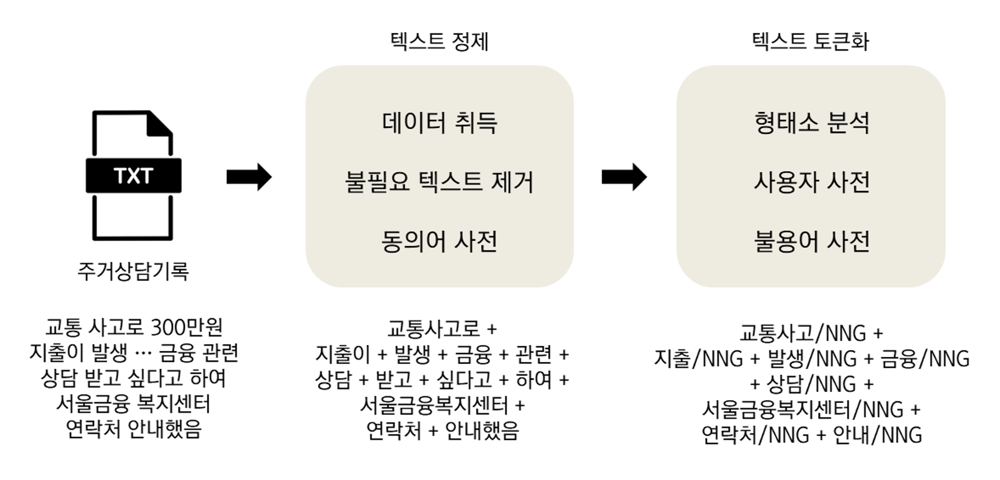

!pip install pandas
!pip install tqdm
!pip install kiwipiepy들어가기
비정형 텍스트 데이터는 정제와 토큰화 등 전처리 과정을 통해 텍스트 분석에 용이한 형태로 바꿔주어야 한다.

정제는 불필요한 텍스트를 제거하고 동의어 사전으로 텍스트를 일관되게 만들어 주는 과정이다. 위 예시에서는 ’서울금융 복지센터’를 ’서울금융복지센터’로 바꾸었다. 토큰화는 형태소 분석과 사용자, 불용어 사전 적용으로 분석에 필요한 형태소를 추출하는 과정이다. 띄어쓰기를 기준 토큰 형태로 바꾸었다.
1. 텍스트 정제
1.1. 패키지 설치
필요한 패키지를 설치한다. 아래 코드를 Visual Studio Code 등 python 편집기에 입력하고 실행하면 된다.
1.2. 패키지 및 데이터 불러오기
설치 후, 필요한 패키지를 먼저 불러온다.
## 필요한 모듈 불러오기
import json, random, re, os
import pandas as pd
import swifter # 병렬처리
from tqdm import tqdm # 작업 프로세스 시각화
from kiwipiepy import Kiwi # 형태소분석기 모듈
from kiwipiepy.utils import Stopwords # 불용어사전 담겨있는 모듈 불러오기샘플 데이터를 불러온다. 여기에서 다운로드 할 수 있다. id_f는 각 데이터 고유 ID, cons_text는 상담기록 원문이다.
db_record = pd.read_csv("data/db_record_v1_sample.csv") # 데이터 불러오기| id_f | cons_text |
|---|---|
| 1 | * 재개발 임대 아파트 거주중. * 임대료 7개월 1,381,980원 체납 * 일자리를 구하는 중으로 수입이 없어 경제적으로 어려운 상황으로 인함. * 작년 20.10.30 체납 상담했던 대상자로 현재 실업급여로 180만원이 나오고 있는데, 수급자 신청해 보려 했으나, 실업급여와 중복으로 받을 수 없다고 안내를 받았다 함. * 임대료 체납 기간이 길어질수록 나중에 퇴거 명령을 받으실 수도 있다고 안내드렸더니, 이번에 빌려서 어떻게든 해결해 보려 한다고 하심. * 일자리를 구하신다고 하셔서 임대주택 입주자 분들께 일자리 상담 연계해 드리고 있는데, 필요하신지 여쭤보았더니, 자신이 직접 알아보시겠다고 하심. |
| 2 | * 청년임차보증금 이자지원사업 추천서 관련 문의전화 주심(20대 추정) * 건강보험자격득실확인서 지역가입자이며 대학생으로 소득 없음. 국세청홈택스 소득금액증명원 조회결과 2019년 아르바이트 소득 조회됨. 취업준비생 유형으로 신청 가능한지 궁금 · 취업준비생 유형으로 신청 가능 * 서울주거포털에서 추천서 신청시 거주지 주소에 현주소 기입하는 것인지 궁금 · 서울주거포털 추천서 신청시 현주소 기입 * 서울시추천서 신청과 이사 할 전월세주택 물색 중에서 어느것을 먼저 해야하는지 궁금 · 서울시추천서 유효기간 발급일로부터 3개월임을 안내 |
1.3. 불필요한 토큰 제거
기호나 태그 등 불필요한 토큰을 삭제한다. 숫자나 영어도 불필요하다고 여길 수 있지만 ‘1인가구’, ‘2룸’, ‘LH’, ‘SH’ 등 의미있는 토큰이 많아 삭제하지 않았다.
아래 코드로 먼저 텍스트 내 영어 표현을 모두 소문자화 한 후, 한글과 숫자, 영어 외 나머지를 공백 처리했다.
db_record['cons_text_cleaned_1'] = list(map(lambda text: re.sub(r"([^가-힣0-9a-z ])", " ", text), db_record['cons_text'].str.lower()))| cons_text | cons_text_cleaned_1 |
|---|---|
| * 재개발 임대 아파트 거주중. * 임대료 7개월 1,381,980원 체납 * 일자리를 구하는 중으로 수입이 없어 경제적으로 어려운 상황으로 인함. * 작년 20.10.30 체납 상담했던 대상자로 현재 실업급여로 180만원이 나오고 있는데, 수급자 신청해 보려 했으나, 실업급여와 중복으로 받을 수 없다고 안내를 받았다 함. * 임대료 체납 기간이 길어질수록 나중에 퇴거 명령을 받으실 수도 있다고 안내드렸더니, 이번에 빌려서 어떻게든 해결해 보려 한다고 하심. * 일자리를 구하신다고 하셔서 임대주택 입주자 분들께 일자리 상담 연계해 드리고 있는데, 필요하신지 여쭤보았더니, 자신이 직접 알아보시겠다고 하심. | 재개발 임대 아파트 거주중 임대료 7개월 1 381 980원 체납 일자리를 구하는 중으로 수입이 없어 경제적으로 어려운 상황으로 인함 작년 20 10 30 체납 상담했던 대상자로 현재 실업급여로 180만원이 나오고 있는데 수급자 신청해 보려 했으나 실업급여와 중복으로 받을 수 없다고 안내를 받았다 함 임대료 체납 기간이 길어질수록 나중에 퇴거 명령을 받으실 수도 있다고 안내드렸더니 이번에 빌려서 어떻게든 해결해 보려 한다고 하심 일자리를 구하신다고 하셔서 임대주택 입주자 분들께 일자리 상담 연계해 드리고 있는데 필요하신지 여쭤보았더니 자신이 직접 알아보시겠다고 하심 |
| * 청년임차보증금 이자지원사업 추천서 관련 문의전화 주심(20대 추정) * 건강보험자격득실확인서 지역가입자이며 대학생으로 소득 없음. 국세청홈택스 소득금액증명원 조회결과 2019년 아르바이트 소득 조회됨. 취업준비생 유형으로 신청 가능한지 궁금 · 취업준비생 유형으로 신청 가능 * 서울주거포털에서 추천서 신청시 거주지 주소에 현주소 기입하는 것인지 궁금 · 서울주거포털 추천서 신청시 현주소 기입 * 서울시추천서 신청과 이사 할 전월세주택 물색 중에서 어느것을 먼저 해야하는지 궁금 · 서울시추천서 유효기간 발급일로부터 3개월임을 안내 | 청년임차보증금 이자지원사업 추천서 관련 문의전화 주심 20대 추정 건강보험자격득실확인서 지역가입자이며 대학생으로 소득 없음 국세청홈택스 소득금액증명원 조회결과 2019년 아르바이트 소득 조회됨 취업준비생 유형으로 신청 가능한지 궁금 취업준비생 유형으로 신청 가능 서울주거포털에서 추천서 신청시 거주지 주소에 현주소 기입하는 것인지 궁금 서울주거포털 추천서 신청시 현주소 기입 서울시추천서 신청과 이사 할 전월세주택 물색 중에서 어느것을 먼저 해야하는지 궁금 서울시추천서 유효기간 발급일로부터 3개월임을 안내 |
1.3. 동의어 사전
같은 의미지만 다른 표현으로 쓰이는 단어를 통일하기 위해 동의어 사전을 적용한다. 사전에 구축한 사전은 여기에서 다운로드 가능하며, 바꿔줄 단어beforeWord, 바꿀 단어afterWord로 구성된다.
예를 들어, 서울주거포털은 ‘서울 주거포털’과 ’서울주거포털’로, ’아산사회복지재단’은 ’현대아산재단’, ‘아산재단’ 등으로 상담사마다 같은 의미지만 다르게 쓰는 표현을 일치시켜준다.
| beforeWord | afterWord | |
|---|---|---|
| 0 | 재개발 임대 | 재개발임대 |
| 1 | 재개발임대주택 | 재개발임대 |
| 2 | 서울 주거포털 | 서울주거포털 |
| 3 | 현대아산재단 | 아산사회복지재단 |
| 4 | 아산재단 | 아산사회복지재단 |
| 5 | 아산사회복지 재단 | 아산사회복지재단 |
| 6 | 아산복지재단 | 아산사회복지재단 |
동의어 사전으로 상담 원문 내용을 바꾸는 코드는 아래와 같다. 함수 replace_word는 한 개의 상담 내용cons_text 열마다 동의어사전dict_synonyms에서 beforeWord와 일치하는 구간이 발견되면 afterWord로 바꾼다.
## 구축한 동의어사전 불러오기
dict_synonyms = pd.read_csv('data/dict/dict_synonyms.csv')
## 동의어사전을 적용하는 함수 정의
def replace_word(text):
for i in range(len(dict_synonyms['beforeWord'])):
try:
if dict_synonyms['beforeWord'][i] in text: # beforeWord가 상담내용에서 발견된다면
text = text.replace(dict_synonyms['beforeWord'][i], dict_synonyms['afterWord'][i]) # 해당하는 단어의 afterWord로 바꾸어라
except Exception as e: # 에러가 있다면 멈추고 알려주어라
print(f"Error 발생 / 에러명: {e}")
print(dict_synonyms['afterWord'][i])
print(text)
return text
db_record['cons_text_cleaned_2'] = db_record['cons_text_cleaned_1'].swifter.set_npartitions(npartitions = 12).apply(lambda x: replace_word(x))| cons_text | cons_text_cleaned_2 |
|---|---|
| * 재개발 임대 아파트 거주중. * 임대료 7개월 1,381,980원 체납 * 일자리를 구하는 중으로 수입이 없어 경제적으로 어려운 상황으로 인함. * 작년 20.10.30 체납 상담했던 대상자로 현재 실업급여로 180만원이 나오고 있는데, 수급자 신청해 보려 했으나, 실업급여와 중복으로 받을 수 없다고 안내를 받았다 함. * 임대료 체납 기간이 길어질수록 나중에 퇴거 명령을 받으실 수도 있다고 안내드렸더니, 이번에 빌려서 어떻게든 해결해 보려 한다고 하심. * 일자리를 구하신다고 하셔서 임대주택 입주자 분들께 일자리 상담 연계해 드리고 있는데, 필요하신지 여쭤보았더니, 자신이 직접 알아보시겠다고 하심. | 재개발임대 아파트 거주중 임대료 7개월 1 381 980원 체납 일자리를 구하는 중으로 수입이 없어 경제적으로 어려운 상황으로 인함 작년 20 10 30 체납 상담했던 대상자로 현재 실업급여로 180만원이 나오고 있는데 수급자 신청해 보려 했으나 실업급여와 중복으로 받을 수 없다고 안내를 받았다 함 임대료 체납 기간이 길어질수록 나중에 퇴거 명령을 받으실 수도 있다고 안내드렸더니 이번에 빌려서 어떻게든 해결해 보려 한다고 하심 일자리를 구하신다고 하셔서 임대주택 입주자 분들께 일자리 상담 연계해 드리고 있는데 필요하신지 여쭤보았더니 자신이 직접 알아보시겠다고 하심 |
| * 청년임차보증금 이자지원사업 추천서 관련 문의전화 주심(20대 추정) * 건강보험자격득실확인서 지역가입자이며 대학생으로 소득 없음. 국세청홈택스 소득금액증명원 조회결과 2019년 아르바이트 소득 조회됨. 취업준비생 유형으로 신청 가능한지 궁금 · 취업준비생 유형으로 신청 가능 * 서울주거포털에서 추천서 신청시 거주지 주소에 현주소 기입하는 것인지 궁금 · 서울주거포털 추천서 신청시 현주소 기입 * 서울시추천서 신청과 이사 할 전월세주택 물색 중에서 어느것을 먼저 해야하는지 궁금 · 서울시추천서 유효기간 발급일로부터 3개월임을 안내 | 청년임차보증금 이자지원 추천서 관련 문의전화 주심 20대 추정 건강보험자격득실확인서 지역가입자이며 대학생으로 소득 없음 국세청홈택스 소득금액증명원 조회결과 2019년 아르바이트 소득 조회됨 취업준비생 유형으로 신청 가능한지 궁금 취업준비생 유형으로 신청 가능 서울주거포털에서 추천서 신청시 거주지 주소에 현주소 기입하는 것인지 궁금 서울주거포털 추천서 신청시 현주소 기입 서울시추천서 신청과 이사 할 전월세주택물색 중에서 어느것을 먼저 해야하는지 궁금 서울시추천서 유효기간 발급일로부터 3개월임을 안내 |
2. 텍스트 토큰화
2.1. 형태소분석기 Kiwi
Kiwi 형태소분석기를 활용하여 텍스트 토큰화를 진행한다. Kiwi는 빠른 속도와 준수한 정확도, 그리고 사용자사전 수정과 적용이 용이해 형태소분석기로 선택했다.
기본 설정
Kiwi()에서 설정을 바꿔줄 수 있다. kiwi.tokenize는 텍스트 원문을 형태소분석하는 함수다. 기본 설정으로 예제를 토큰화해보자.
kiwi = Kiwi() # Kiwi 기본값 설정
kiwi.tokenize("서울주거포털에서 재개발임대 정보를 알아보셰요")결과는 토큰 형태로 반환되며, 원형form과 형태소tag, 시작위치start, 길이len으로 구성된다.
[Token(form='서울', tag='NNP', start=0, len=2),
Token(form='주거', tag='NNG', start=2, len=2),
Token(form='포털', tag='NNG', start=4, len=2),
Token(form='에서', tag='JKB', start=6, len=2),
Token(form='재', tag='XPN', start=9, len=1),
Token(form='개발', tag='NNG', start=10, len=2),
Token(form='임대', tag='NNG', start=12, len=2),
Token(form='장보', tag='NNP', start=15, len=2),
Token(form='를', tag='JKO', start=17, len=1),
Token(form='알', tag='VV', start=19, len=1),
Token(form='어', tag='EC', start=20, len=1),
Token(form='보', tag='VX', start=21, len=1),
Token(form='세', tag='EC', start=22, len=1),
Token(form='요', tag='JX', start=23, len=1)]Kiwi 추가 설정
Kiwi에서 활용 가능한 설정을 추가한다. 여기에서 설정 사항을 확인할 수 있다. 설정한 예제는 아래와 같다.
- 형태소 분석기에 활용 가능한 모델; 처리 시간은 늘어나지만 정확한 모델링이 가능한 모델로 설정
- 오타 교정
- 사용자정의사전 적용; 별도로 만든 txt 파일 활용
- 불용어사전 적용; Kiwi에서 제공하는 기본 사전 활용
2.2. 사용자정의 사전
사용자정의사전 소개
사용자정의 사전은 별도로 구축한 사용자정의 단어가 형태소분석기 모델이 아닌 지정한 형태소로 구분되게끔 하기 위해 사용한다. Kiwi 설정 중 형태소분석기나 불용어사전 등은 기본적으로 제공하는 것을 사용해도 괜찮지만, 이 사용자정의 사전은 분석 목적과 데이터 특성에 맞게 개발하고 업데이트 해줘야 한다.
사용자사전을 적용하지 않고 예제인 ’서울주거포털에서 확인하실 수 있습니다’를 토큰화해보자.
kiwi = Kiwi(model_type = 'sbg', typos = 'basic')
kiwi.tokenize('서울주거포털에서 확인하실 수 있습니다', stopwords = Stopwords())결과는 다음과 같다. Kiwi 형태소분석기는 ‘서울주거포털’은 ’서울’, ‘주거’, ’포털’로 각각 명사로 분리하여 결과를 내놓았다. 추후 텍스트 분석의 단위는 이렇게 분리된 토큰인 점을 감안하면, ’서울주거포털’은 이렇게 분리가 되선 안된다.
[Token(form='서울', tag='NNP', start=0, len=2),
Token(form='주거', tag='NNG', start=2, len=2),
Token(form='포털', tag='NNG', start=4, len=2),
Token(form='확인', tag='NNG', start=9, len=2),
Token(form='시', tag='EP', start=12, len=1),
Token(form='있', tag='VA', start=16, len=1),
Token(form='습니다', tag='EF', start=17, len=3)]여기에서 사용자정의 사전으로 ’서울주거포털’을 하나의 명사로 취급하는 명령어를 add_user_word로 추가해보자.
kiwi = Kiwi(model_type = 'sbg', typos = 'basic')
kiwi.add_user_word('서울주거포털', 'NNP', 0)
kiwi.tokenize('서울주거포털에서 확인하실 수 있습니다', stopwords = Stopwords())’서울주거포털’은 분리되지 않고 하나의 고유명사로 구분되었다.
[Token(form='서울주거포털', tag='NNP', start=0, len=6),
Token(form='확인', tag='NNG', start=9, len=2),
Token(form='시', tag='EP', start=12, len=1),
Token(form='있', tag='VA', start=16, len=1),
Token(form='습니다', tag='EF', start=17, len=3)]사용자정의사전 구축
사용자정의 사전을 구축하는 방법은 다음과 같다.
동의어 사전 활용하기
동의어 사전에서 정의한 고유명사를 사용자정의사전 구축에 활용한다. 동의어사전을 불러오고, 치환한 단어의 고유값을 추출한 후, 각 명사를 고유명사NNG와 이 구문이 Kiwi 형태소분석기보다 더 높은 점수를 받게끔 9점을 부여한다.
dict_synonyms = pd.read_csv('data/dict/dict_synonyms.csv') # 동의어사전 불러오기
list_userDefined_synonyms = (dict_synonyms['afterWord'].str.strip().unique() + "\tNNG\t9").tolist() # 사용자 정의 사전 포맷으로 변경위 코드 결과는 다음과 같다. 이 사전을 활용하면 ‘서울주거포털’은 ’서울’+‘주거’+‘포털’이 아니라 ’서울주거포털’로, ’일자리센터’는 ’일자리’+’센터’가 아니라 ’일자리센터’로 분석될 것이다.
서울주거포털 NNG 9
일자리센터 NNG 9
고용복지센터 NNG 9
상담센터 NNG 9명사 외 형태소 지정하기
동사 등 형태소는 따로 텍스트 파일을 만들어준다. 예를 들어, ‘주심’은 Kiwi 형태소분석기에서는 심판의 의미로 명사로 구분되지만 주거상담 기록에서는 ’서류를 주시다’를 줄여서 쓰는 경우가 많았다. 이 경우에는 ’주심’을 ’주’+‘시’+’다’로 분석되게 지정해야 한다.
여기에서 다운받은 파일을 먼저 불러온다.
dict_add = pd.read_table("data/dict/dict_userDefined_madeByMe.txt") # 추가 사전 불러오기이 목록을 사용자정의 사전 포맷으로 바꿔준다. 위와 마찬가지로 높은 점수, 우선순위를 가지도록 9점을 가지게 만들어준다.
list_userDefined_add = (pd.read_table("data/dict/dict_userDefined_madeByMe.txt", header = None, sep = "-")[0] + "\t9").tolist() # 사용자 정의 사전 포맷으로 변경아와 같이 명사 외 형태소는 지정된다.
주심 주/VV + 시/EP + 다/EC
하셨슴 하/VV + 었/EP + 음/EC 9
연락키로 연락/NNG + 하/XSV + 기/ETN + 로/JKB 9
미납됨 미납/NNG + 되/VV + 다/EC 9위 두 사전 결합
위 두 사전을 결합하여 최종 사용자정의 사전을 만들어준다.
dict_userDefined = pd.DataFrame(pd.DataFrame(list_userDefined_synonyms + list_userDefined_add)[0].unique()) # 두 list 결합
dict_userDefined.to_csv('data/dict/dict_userDefined.txt', index = False, header = False) # 새로운 사용자 정의 사전 저장하기사용자정의사전 적용
추가 설정을 한 형태소 분석의 결과는 다음과 같다. 여기에서 만든 사전은 다운받을 수 있다.
kiwi = Kiwi(model_type = 'sbg', typos = 'basic') # Kiwi 추가 설정
kiwi.load_user_dictionary('data/dict/dict_userDefined.txt') # 사용자사전 추가
kiwi.tokenize("서울주거포털을 소개하며 종결키로 함", stopwords = Stopwords())[Token(form='서울주거포털', tag='NNG', start=0, len=6),
Token(form='소개', tag='NNG', start=8, len=2),
Token(form='종결', tag='NNG', start=13, len=4),
Token(form='ᆷ', tag='ETN', start=18, len=1)]2.3. 불용어 사전
kiwi 기본 불용어 사전에서 거르지 못한 불용어를 거르기 위해 사전을 만든다. ‘대상자’와 ’서비스’, ‘주거’ 등은 자주 등장하지만 분석에 유의미한 단어는 아니다. 지역명과 상담사명 등도 마찬가지로 제거하면 좋다. 구축한 사전은 여기에서 다운로드 할 수 있다.
| type | word | pos | |
|---|---|---|---|
| 0 | 일반 | 대상자 | NNG |
| 1 | 일반 | 서비스 | NNG |
| 2 | 일반 | 주거 | NNG |
| 3 | 일반 | 주택 | NNG |
| 4 | 일반 | 가구 | NNG |
| 5 | 지역명 | 잠실2동 | NNG |
| 6 | 지역명 | 잠실3동 | NNG |
| 7 | 상담사명 | 박상준 | NNG |
| 8 | 상담사명 | 이종현 | NNG |
한글자 사전
단어가 한글자지만 중요한 것을 모아둔 사전이다. 보통 한글자는 의미가 잘 없다. 하지만 ‘돈’은 경제적 상황을 서술할 때 사용하며, ’좁’은 ’좁다’, ‘좁은 집’으로, ’낡’은 ’낡다’ 등으로 활용된다. 이 같은 중요한 한글자는 불용어로 걸러지지 않게끔 한다. 형태소 분석한 토큰이 아주 짧은 경우는 보통 제거한다. 여기에서 다운로드 할 수 있다.
| word | |
|---|---|
| 0 | 돈 |
| 1 | 좁 |
| 2 | 낡 |
| 3 | 커 |
| 4 | 크 |
| 5 | 작 |
2.4. Kiwi 적용하기
앞에서 소개한 내용을 종합하여 만든 형태소 분석은 아래와 같다.
Kiwi 형태소분석
Kiwi 추가 설정과 사용자정의사전을 추가해서 예제 파일을 형태소분석 해준다.
kiwi = Kiwi(model_type = 'sbg', typos = 'basic') # Kiwi 추가 설정
kiwi.load_user_dictionary('data/dict/dict_userDefined.txt') # 사용자사전 추가
morph_analysis = lambda x: kiwi.tokenize(x, stopwords = Stopwords()) if type(x) is str else None # 형태소 분석
db_record['cons_text_posTagged_kiwi'] = db_record['cons_text_cleaned_2'].swifter.apply(morph_analysis)| cons_text | cons_text_posTagged_kiwi |
|---|---|
| * 재개발 임대 아파트 거주중. * 임대료 7개월 1,381,980원 체납 * 일자리를 구하는 중으로 수입이 없어 경제적으로 어려운 상황으로 인함. * 작년 20.10.30 체납 상담했던 대상자로 현재 실업급여로 180만원이 나오고 있는데, 수급자 신청해 보려 했으나, 실업급여와 중복으로 받을 수 없다고 안내를 받았다 함. * 임대료 체납 기간이 길어질수록 나중에 퇴거 명령을 받으실 수도 있다고 안내드렸더니, 이번에 빌려서 어떻게든 해결해 보려 한다고 하심. * 일자리를 구하신다고 하셔서 임대주택 입주자 분들께 일자리 상담 연계해 드리고 있는데, 필요하신지 여쭤보았더니, 자신이 직접 알아보시겠다고 하심. | [Token(form='재개발임대', tag='NNG', start=2, len=5), Token(form='아파트', tag='NNG', start=8, len=3), Token(form='거주', tag='NNG', start=12, len=3), Token(form='임대료', tag='NNG', start=19, len=3), Token(form='7', tag='SN', start=23, len=1), Token(form='개월', tag='NNB', start=24, len=2), Token(form='1', tag='SN', start=27, len=1), Token(form='381', tag='SN', start=29, len=3), Token(form='980', tag='SN', start=33, len=3), Token(form='체납', tag='NNG', start=38, len=2), Token(form='일자리', tag='NNG', start=43, len=3), Token(form='구하', tag='VV', start=48, len=2), Token(form='중', tag='NNG', start=52, len=1), Token(form='수입', tag='NNG', start=56, len=2), Token(form='경제', tag='NNG', start=63, len=2), Token(form='어렵', tag='VA-I', start=69, len=3), Token(form='상황', tag='NNG', start=73, len=2), Token(form='인하', tag='VV', start=78, len=2), Token(form='ᆷ', tag='ETM', start=79, len=1), Token(form='작년', tag='NNG', start=84, len=2), Token(form='20', tag='SN', start=87, len=2), Token(form='10', tag='SN', start=90, len=2), Token(form='30', tag='SN', start=93, len=2), Token(form='체납', tag='NNG', start=96, len=2), Token(form='상담', tag='NNG', start=99, len=2), Token(form='대상자', tag='NNG', start=104, len=3), Token(form='현재', tag='MAG', start=109, len=2), Token(form='실업급여', tag='NNG', start=112, len=4), Token(form='180', tag='SN', start=118, len=3), Token(form='나오', tag='VV', start=125, len=2), Token(form='데', tag='NNB', start=131, len=1), Token(form='수급자', tag='NNG', start=134, len=3), Token(form='신청', tag='NNG', start=138, len=2), Token(form='보', tag='VX', start=142, len=1), Token(form='려', tag='EC', start=143, len=1), Token(form='으나', tag='EC', start=146, len=2), Token(form='실업급여', tag='NNG', start=150, len=4), Token(form='중복', tag='NNG', start=156, len=2), Token(form='받', tag='VV-R', start=161, len=1), Token(form='안내', tag='NNG', start=170, len=2), Token(form='받', tag='VV-R', start=174, len=1), Token(form='함', tag='NNP', start=178, len=1), Token(form='임대료', tag='NNG', start=184, len=3), Token(form='체납', tag='NNG', start=188, len=2), Token(form='기간', tag='NNG', start=191, len=2), Token(form='길어지', tag='VV', start=195, len=3), Token(form='ᆯ수록', tag='EC', start=197, len=3), Token(form='나중', tag='NNG', start=201, len=2), Token(form='퇴거', tag='NNG', start=205, len=2), Token(form='명령', tag='NNG', start=208, len=2), Token(form='받', tag='VV-R', start=212, len=1), Token(form='으시', tag='EP', start=213, len=2), Token(form='있', tag='VA', start=219, len=1), Token(form='안내', tag='NNG', start=223, len=2), Token(form='드리', tag='VV', start=225, len=2), Token(form='더니', tag='EC', start=227, len=2), Token(form='이번', tag='NNG', start=231, len=2), Token(form='빌리', tag='VV', start=235, len=2), Token(form='어떻게', tag='MAG', start=239, len=3), Token(form='든', tag='JX', start=242, len=1), Token(form='해결', tag='NNG', start=244, len=2), Token(form='보', tag='VX', start=248, len=1), Token(form='려', tag='EC', start=249, len=1), Token(form='ᆫ다고', tag='EC', start=251, len=3), Token(form='시', tag='EP', start=255, len=2), Token(form='일자리', tag='NNG', start=263, len=3), Token(form='구하', tag='VV', start=268, len=2), Token(form='시', tag='EP', start=270, len=1), Token(form='ᆫ다고', tag='EC', start=270, len=3), Token(form='시', tag='EP', start=275, len=1), Token(form='임대주택', tag='NNG', start=278, len=4), Token(form='입주자', tag='NNG', start=283, len=3), Token(form='분', tag='NNB', start=287, len=1), Token(form='께', tag='JKB', start=289, len=1), Token(form='일자리', tag='NNG', start=291, len=3), Token(form='상담', tag='NNG', start=295, len=2), Token(form='연계', tag='NNG', start=298, len=2), Token(form='드리', tag='VX', start=302, len=2), Token(form='데', tag='NNB', start=308, len=1), Token(form='필요', tag='NNG', start=311, len=2), Token(form='시', tag='EP', start=314, len=1), Token(form='ᆫ지', tag='EC', start=314, len=2), Token(form='여쭈', tag='VV', start=317, len=2), Token(form='보', tag='VX', start=319, len=1), Token(form='더니', tag='EC', start=321, len=2), Token(form='자신', tag='NNG', start=325, len=2), Token(form='직접', tag='MAG', start=329, len=2), Token(form='알아보', tag='VV', start=332, len=3), Token(form='시', tag='EP', start=335, len=1), Token(form='시', tag='EP', start=340, len=2)] |
형태소분석 한 결과를 이어준다. ‘Token(form=’서울주거포털’, tag=‘NNG’, start=0, len=6)’는 그대로 활용할 수 없으므로, Token의 form들을 append로 이어준다. 이어줄 때, 주요품사만 골라서 붙여준다.
## 형태소분석된 것들을 join
dict_stopword = pd.read_csv('data/dict/dict_stopword.csv')
dict_oneChar = pd.read_csv("data/dict/dict_oneChar.csv")
## 품사 정의하기
list_pos_all = ("N", "V", "M", "J", "E", "X") # 주요 품사 모두
list_pos_main = ("N", "V") # 명사, 동사, 형용사만
## 불용어 제거하고 형태소 결합하기
def tokenToText(tokens):
textJoinedMain = []
textJoinedAll = []
for token, pos, _, _ in tokens:
if (token not in list(dict_stopword['word']) and ( len(token) > 1 or (len(token) == 1 and token in list(dict_oneChar['word']) ) )):
if pos.startswith('V'): token = token + '다' # 동사라면 뒤에 '다'를 붙여서 자연스럽게 만들기
if pos.startswith(list_pos_main) : textJoinedMain.append(token)
if pos.startswith(list_pos_all) : textJoinedAll.append(token)
out = pd.Series([' '.join(textJoinedAll), ' '.join(textJoinedMain)])
return out
db_record[['cons_text_posTagged_all', 'cons_text_posTagged_main']] = db_record['cons_text_posTagged_kiwi'].swifter.set_npartitions(npartitions = 6).apply(lambda x: tokenToText(x))| cons_text | cons_text_posTagged_main |
|---|---|
| * 재개발 임대 아파트 거주중. * 임대료 7개월 1,381,980원 체납 * 일자리를 구하는 중으로 수입이 없어 경제적으로 어려운 상황으로 인함. * 작년 20.10.30 체납 상담했던 대상자로 현재 실업급여로 180만원이 나오고 있는데, 수급자 신청해 보려 했으나, 실업급여와 중복으로 받을 수 없다고 안내를 받았다 함. * 임대료 체납 기간이 길어질수록 나중에 퇴거 명령을 받으실 수도 있다고 안내드렸더니, 이번에 빌려서 어떻게든 해결해 보려 한다고 하심. * 일자리를 구하신다고 하셔서 임대주택 입주자 분들께 일자리 상담 연계해 드리고 있는데, 필요하신지 여쭤보았더니, 자신이 직접 알아보시겠다고 하심. | 재개발임대 아파트 거주 임대료 체납 일자리 구하다 수입 경제 어렵다 상황 인하다 작년 체납 상담 실업급여 나오다 수급자 신청 실업급여 중복 안내 임대료 체납 기간 길어지다 나중 퇴거 명령 안내 드리다 빌리다 해결 일자리 구하다 임대주택 입주자 일자리 상담 연계 드리다 필요 여쭈다 알아보다 |